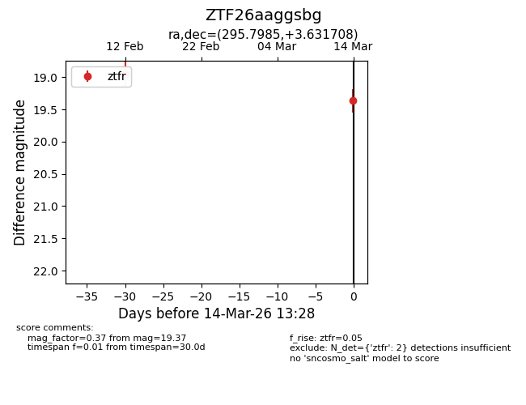
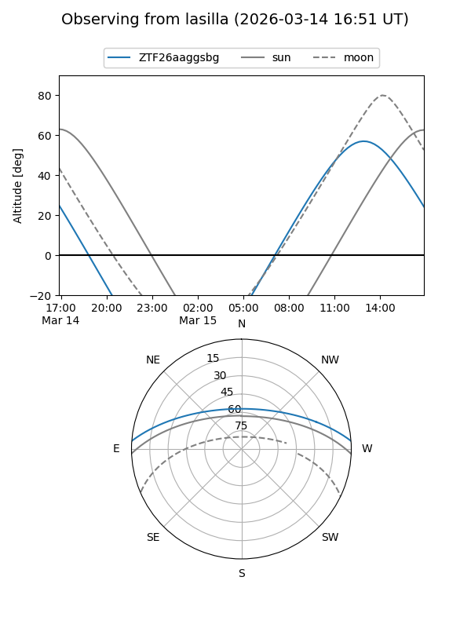
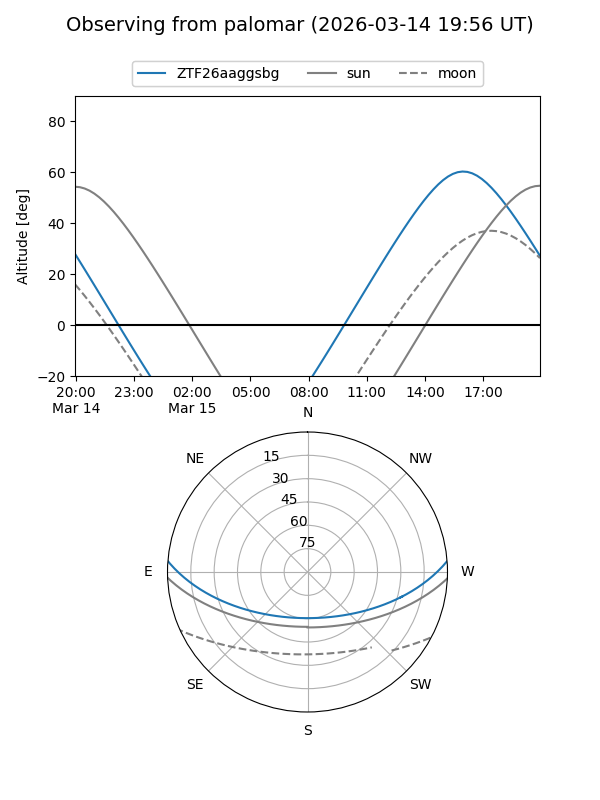

ZTF26aaggsbg
Target ZTF26aaggsbg at 2026-03-14 13:31
Aliases and brokers:
FINK: link
Lasair: link
ALeRCE: link
alt names
ZTF26aaggsbg (ztf,fink_ztf)
Coordinates:
equatorial (ra, dec) = 295.7985,+3.63171
equatorial (HMS+DMS) = 19:43:11.64,+03:37:54.15
galactic (l, b) = (42.1741,-9.78767)
Flags:
Photometry:
last ztfr=19.37
2 ztfr detections
Lightcurve

Visibility


Additional plots